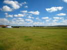
Sens, sur l'autoroute du Soleil... Le festival officiel est sur un jour, mais beaucoup de cervolistes viennent le samedi pour voler entre eux. J'arrive vers 11 h et en fait, tout est prêt ! Le terrain est vaste et beau, avec les vertes collines de l'Yonne dans le fond...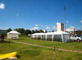
Les barnums sont déjà dressés, un pour la buvette et les repas, un plus petit pour les ateliers...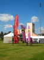
Les bannières des Sens Ciel sont aussi plantées, et indiquent très bien le vent... soit zéro pour le moment !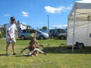
Un lanceur de boomerang, Alain Farges, enseignera le maniement et la construction de ses engins pendant 2 jours... Skippy garde la tente et les outils...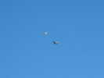
Au-dessus passe une patrouille mixte, un avion de tourisme et un Broussard, ex-avion militaire de liaison et de petit transport, réputé pour son train élastique...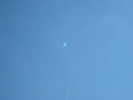
Aujourd'hui, rien ne devrait voler, pas de vent... Evidemment je sors ma raie Manta indoor qui monte sans problème à 200 m !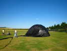
Grand soleil, pas de vent, c'est le jour de gloire pour les ballons solaires ! Celui-ci est énorme, le plus difficile est de le gonfler au départ !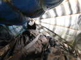
Il n'est pas assemblé par soudure à chaud, mais par du ruban adhésif collé à l'intérieur...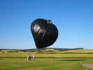
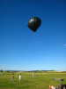
Et voilà, il s'élève calmement à la verticale...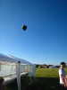
Il montera assez haut, bien 40 m...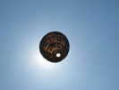
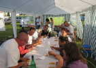
Bien que le festival ne soit pas ouvert, le repas du soir est quand même offert gracieusement !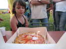
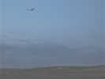
Le vol de nuit par vent nul n'est pas très couru... Seule une équipe fera voler (le temps de traverser le terrain...) un delta muni de 2 lampions...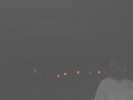
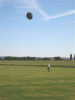
Dimanche matin commence comme le samedi : pas de vent et ciel bleu. D'où : ballon solaire... Mais ça se couvrira et l'après-midi, il soufflera un bon vent avec une température qui restera quand même élevée !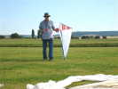
Pour le moment, Loïk Lamalle essaye vainement de faire voler le Eddy qu'il a réalisé...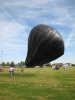
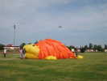
Pas de vent, mais Sens gonfle quand même son hérisson fétiche, grâce à une soufflerie implantée... disons à l'opposé de la bouche, maintenue, elle, soigneusement close...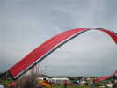
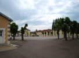
Dimanche midi, départ en convoi pour le déjeuner, pas très loin quand même. On suit, et on se retrouve... dans la cour de la caserne de la Police !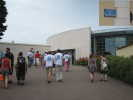
Ouf, direction... Place de la Restauration, pour un déjeuner dans leurs locaux...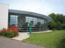
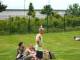
Retour au terrain, temps perdu minimum... Le lanceur de boomerang peut se casser un oeuf sur la tête et s'est équipé en conséquence...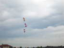
Les Crazy Drivers, constitués ici de Ronan et de 2 transfuges de Moissy-Cramayel feront plusieurs présentations, malheureusement assez loin du public pour éviter le masque des immeubles...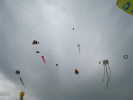
Le vent n'est pas mal, maintenant, et il y a pas mal de monde en l'air : la roue de Hugo, le flow-form de Vent de Folie, le Rokkaku de Ronan, le hibou de Jean-François, l'armoire de Loïk, la guêpe et la sirène des Impossibles et de nombreux deltas ou pyrodeltas !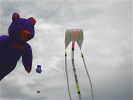
L'armoire de Loïk est particulièrement stable une fois bien réglée... Le Nounours des L'Higuinen vole au bout de sa canne à pêche bien pratique...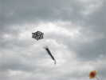
Le hibou de Jean-François Lorente surveille tout de son oeil pas commode... Il portera aussi des bonshommes de J-F, noirs et blancs bien sûr !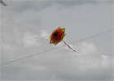
Un beau flocon, assez grand, tient maintenant en l'air, après avoir eu un peu de mal à décoller dans les basses couches perturbées !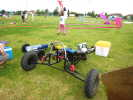
On verra même rouler vers le soir ce char très perfectionné : suspension très souple à amortisseurs à gaz, réglage du carrossage, voie réglable, siège doté de bourrelets anti-éjection...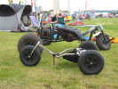
Le char de Madame, qui débute dans la traction est beaucoup plus petit... Pour l'écolage, monsieur la retient avec une longe passée autour de l'essieu arrière...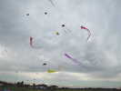
Toujours pas mal de monde en vol. Vent de Folie sort ses Foly-angs, qui occupent bien de l'espace !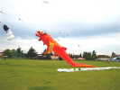
Maintenant, Jean-Paul peut monter Bol-Z sans soufflerie mal placée... Il n'y a rien de trop quand même...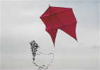
Georges fait voler un cerf-volant de la famille Classique, avec une épine dorsale double... Là aussi, il faudrait un peu plus de vent, mais ça vole...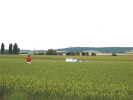
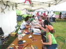
L'atelier a bien marché toute la journée, partagé entre les boomerangs et les cerfs-volants !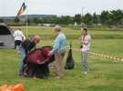
Ca se termine, Georges replie sa tente Quechua... Il faut bien sûr plusieurs essais, et quand ça marche, Georges ne sait pas pourquoi ni comment, mais, avec de la persévérance, il finit toujours par y arriver !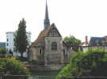
Je pars dimanche soir, je traverse Sens pour voir la ville. A la sortie, cette église au bord de l'Yonne, un peu particulière avec sa partie haute en colombages !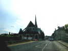
En route, une autre église qui ne se prend pas pour rien, avec ses arcs-boutants de cathédrale !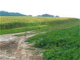
Je m'arrête dans un chemin champêtre, pas la peine de se presser pour se jeter dans les embouteillages de la rentrée sur Paris ! Un beau lièvre vient me faire une petite visite. Il s'en va, mais tranquillement, sans paraître très inquiet...